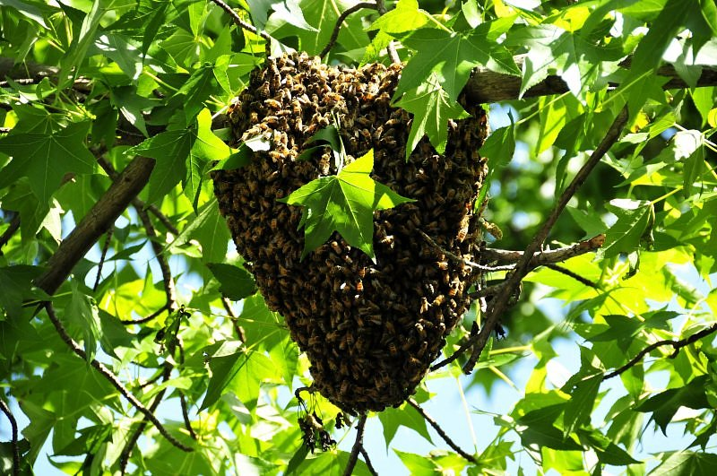

Opowieść o pszczołach i miodzie
(podstawowe wiadomości, głównie dla dzieci, ale nie tylko...)
napisał Zenon Ciechanowicz
Giżycko 2013


Dawno, dawno temu... w telewizji dzieci oglądały piękna bajkę o Pszczółce Mai i jej letnich przygodach. Pszczółka była na tyle sympatyczna, a jej przygody na tyle interesujące, że przed ekranami telewizorów usadawiały się nie tylko dzieci, ale często również dorośli.
Ta opowieść będzie również o pszczółce, jednak bezimiennej, mieszkającej w prawdziwym ulu. Główna różnica między pszczółką z ula na pasieczysku, a bajkową polega na tym, że prawdziwa pszczoła zajmuje się noszeniem miodu, a bajkowa Maja tym się nie interesowała...

Ul to domek, w którym żyją pszczoły, dzięki którym na naszych stołach pojawia się pożywny smakołyk, zwany miodem. Miejsce, w którym stoją ule, nazywa się pasieką. Osoba, która troszczy się o pszczoły, spędza przy nich wiele godzin, wie o ich życiu bardzo dużo, to pszczelarz. Miód to słodki, wspaniały przysmak. Warto nim smarować chleb jak najczęściej, tym bardziej, że nie szkodzi na zęby, odwrotnie zapobiega próchnicy.
Zapoznanie się z tą krótką opowieścią nie zrobi z czytelnika pszczelarza, ale przynajmniej w sposób bardzo ogólny zapozna z życiem pszczół i z tym, w jaki sposób i skąd się pojawia w ulach miód. Zapoznajmy się więc z życiem pszczół, bo są to owady, które prowadzą zaskakująco ciekawy tryb życia, ciężko pracują w zorganizowanej wielotysięcznej grupie, a z efektów ich pracy korzysta też człowiek. Prawdziwa pszczółka nie prowadzi tak beztroskiego życia jak Pszczółka Maja, lata celowo, wraca do ula obładowana słodkim nektarem, z którego powstaje bursztynowy miód. Skąd autor o tym wie? Od ponad pół wieku zajmuje się pszczołami, a ponadto o pszczołach przeczytał wiele różnych książek. Wie, że pszczoły, w krótkim czasie po wydostaniu się z komórki, przystępują do pracy i tak spędzają całe swe życie.

Tak naprawdę pszczoły nie przynoszą do ula miodu, tylko nektar. Często się mówi, że pszczoły noszą miód, to tzw. skrót myślowy. Nektar również jest słodki, ale zawiera znacznie więcej wody i dlatego jest bez porównania rzadszy. W nektarze też nie ma wielu składników, którymi pszczoły wzbogacają miód. Ciekawe jest też to, że po pokonaniu całej drogi przekształceń od nektaru do dojrzałego miodu, nie zmniejsza on swego aromatu. Nadal wydziela zapach tych kwiatów, z których został zebrany i jeśli jest ich wyraźna przewaga, to po zapachu można poznać z jakich roślin pochodzi miód, którym właśnie smarujesz chleb. Miód powstaje w wyniku wspólnej, wytężonej pracy wielu dziesiątków pszczół, czyli w rodzinie pszczelej. Żadna pojedyncza pszczoła nie jest w stanie wyprodukować miodu. Mało tego, żadna pszczoła nie jest w stanie wyżyć w samotności, w oderwaniu od rodziny pszczelej, bez względu na porę roku. Rodzina pszczela, to około dwudziestu tysięcy pszczół żyjących razem w okresie zimy i czasami ponad trzy razy więcej w okresie letnim. Każda taka rodzina musi mieć swój ul. Osłania on pszczoły ze wszystkich stron w pierwszej kolejności od niekorzystnych warunków atmosferycznych, takich jak wiatr, deszcz, zimno, ale i od różnych wrogów, chętnych na słodki przysmak. Naukowcy twierdzą, że pszczoły się pojawiły na ziemi znacznie wcześniej, niż człowiek. Rodzi się więc pytanie, jak sobie wtedy radziły, kto im budował pszczele domki? Kiedyś, przed laty rodzina pszczela mieszkała w lesie, w dziuplach drzew, zwanych barciami. Pierwsi pszczelarze nazywali się bartnikami. Szczególnie na początku, głównym zajęciem bartników było wydobywanie miodu nagromadzonego przez pszczoły w dziuplach. W tym celu stosowali różne metody, przeważnie ze szkodą dla pszczół. Często byli żądleni, ale to nie zniechęcało do pozyskiwania miodu. Widocznie już wtedy, bardzo dawno, nasi przodkowie zrozumieli, że miód jest nie tylko smaczny, ale również bardzo pożywny. Teraz fachowcy twierdzą, że spożywanie miodu wzmacnia nie tylko mięśnie, ale też przyczynia się do lepszej pracy mózgu. Miód zalecany jest i wskazany nie tylko dla kosmonautów i lotników, marynarzy i górników, ale również dla dzieci w wieku szkolnym, a nawet przedszkolnym. Fachowcy twierdzą, że dzieci spożywające miód mniej chorują i osiągają lepsze wyniki w nauce.
Minęły lata i bartnicy przekształcili się w pszczelarzy, którzy już nie biegają po lasach, nie szukają dzikich pszczół w dziuplach, nie wdrapują się na drzewa, by dostać się do miodu. Pszczelarze nauczyli się robić pszczele domki, które ustawiają w dogodnym miejscu, gdzie jest najwięcej kwiatów. Niektórzy nawet wędrują ze swymi pszczołami z miejsca na miejsce, oczywiście w okresie lata. Tu powstaje kolejne pytanie. Po co to robią? Czy nie lepiej, jeśli pszczoły będą stały w jednym miejscu? Pszczelarze wędrują z pszczołami na tak zwane pożytki. Są to takie miejsca, gdzie pszczoły, bez większych poszukiwań znajdują tysiące takich samych kwiatów w jednym miejscu, na przykład, rzepaku, gryki. Niezwykle miododajne są też dobrze znane drzewo - lipa i niewysoki krzew - malina. Miód zarówno z lipy, jak i maliny jest szczególnie aromatyczny i dobry na okres zimowy, kiedy szaleją zamiecie i mrozy. Chyba każdy z nas jadł owoce malin. Nie każdy jednak wie, że jeśli na kwiatki maliny przylatywały pszczoły, to owoce które potem się pojawią, będą większe i smaczniejsze. Jeśli spotkasz teraz gdzieś na kwiatku jakiegoś owada, to najprawdopodobniej będzie to pszczoła w trakcie pobierania nektaru lub kwiatowego pyłku. Pyłek jest pszczołom nie mniej potrzebny dla prawidłowego rozwoju, niż nektar.
Jak długo byśmy się nie przyglądali pszczole, nie zobaczymy gdzie ona gromadzi nektar, a bez wysiłku zauważymy kolorowe kulki na tylnych nóżkach, umieszczonych w tak zwanych koszyczkach. To jest pyłek. Podczas uważnej obserwacji pszczoły na kwiatku, zauważymy, że ma ona trzy pary nóżek i po dwie pary skrzydeł, po dwa skrzydełka z każdego boku. Podczas lotu łączą się one w taki sposób, że stanowią jedność. W ten sposób lepiej utrzymują pszczołę w powietrzu, może ona lecieć nawet ze znacznym ładunkiem. Pszczoła, w odróżnieniu od np. od bociana, tak szybko macha skrzydełkami, że ich wcale nie widać. Lot pszczoły jest również całkiem inny, niż fruwanie kolorowego motylka, który również jest owadem i też ma delikatne cienkie skrzydełka. Pszczoła lata całkiem inaczej. Celowość lotów w tym przypadku widać już od pierwszych chwil obserwacji. Wystarczyć stanąć na chwilę gdzieś w pobliżu ula, najlepiej w specjalnym kapeluszu, żeby stwierdzić, że po wyjściu z ula unosi się w powietrze, a potem zdecydowanie i szybko podąża w jakimś kierunku. Gdy wraca, z ciężkim ładunkiem, od razu kieruje się do swego ula. Wiadomo kiedy pszczoły latają po nektar i pyłek – latem! A co robią zimą? Śpią? To nie zupełnie jest prawda. Gdyby udało się zajrzeć o tej porze roku do ula, to byśmy zobaczyli pszczoły między plastrami, ciasno zgromadzone jedna przy drugiej, prawie nieruchome, ale nie śpiące. To jest metoda na przerwanie tych warunków atmosferycznych, kiedy na zewnątrz szaleją zamiecie śnieżne, kiedy siarczysty mróz szczypie nas w uszy i nos. Jak sobie radzą, przecież ciepłych grzejników w swoich ulach nie mają? Te pracowite owady, w naszym klimacie, wynalazły sposób na przetrwanie zimy. Już bardzo dawno, zrozumiały, że w wielkiej gromadzie będzie cieplej i tak spędzają długie miesiące zimowe. Same ciasne siedzenie obok siebie jednak by im nie starczyło do przetrwania okresu mrozów. Muszą mieć jeszcze coś, co zapewni im ciepło, chociaż nie posiada płomieni, bezpośrednio nie grzeje. Jest to pokarm – miód. Dzieci też, szczególnie zimą, przed wyjściem z domu powinny dobrze się najeść, z pustym żołądkiem z domu nie powinny wychodzić. Pszczoły muszą zimą dobrze się odżywiać i w tym celu latem gromadzą miód. Na okres od późnej jesieni, do wczesnej wiosny potrzebują go dziesięć kilogramów, a nawet więcej. Rodzina pszczela to nie kilka i nie kilkanaście pszczół, a znacznie więcej. Pszczelarze znaleźli sposób na ich policzenie i ustalili, że w zimie w jednym ulu jest ich około 20 tysięcy, a latam nawet trzy razy więcej. Jeżeli u ludzi w jakiejś rodzinnie jest więcej niż dwoje dzieci, to czasami między nimi dochodzi do sprzeczek. Chciało by się wiedzieć, jak jest w rodzinie pszczelej. Czy tam też powstają czasem jakieś nieporozumienia, jakaś walka na przykład o bardziej aromatyczny miód, albo o szczególnie atrakcyjny pyłek. Pszczoły nigdy nie prowadzą żadnej walki między sobą, w żadnej rodzinie pszczelej. Pomimo, że w jednym ulu, w jednej rodzinie pszczelej jest tak dużo owadów, żyją one cały czas w wielkiej zgodzie. Każda pszczoła wykonuje określoną pracę, odpowiednią dla jej wieku, chętnie i bez żadnego przymusu. Wracamy do pszczół w okresie zimy. Mając pod dostatkiem pokarmu, w pszczelnym ulu, oczywiście z możliwością dopływu świeżego powietrza, pszczoły cierpliwie czekają na wiosnę. Zima stopniowo mija, dzień staje się dłuższy i wreszcie jest tak ciepło, że termometr wskazuje ponad 10 stopni. Wtedy pierwsze pszczoły zbliżają się do wyjścia, wyglądają z zaciekawieniem z ciemnego wnętrza, pragną przekonać się, czy zimowe zamiecie i mrozy naprawdę minęły. Wyczuwają, że nie jest już zimno, że wreszcie nadeszła wiosna, więc naprężają swoje delikatne skrzydełka i unoszą się w powietrze z wesołym brzęczeniem. Wesołe, radosne dźwięki docierają do wnętrza ula. Słyszą je mniej odważne siostry i ostrożnie zbliżą się do wyjścia. Po chwili tak samo wesoło zaczynają kręcić się przed ulem. W całej pasiece narasta i wzmaga się radosny szum. Pszczoły chwilę kręcą się, starają się przypomnieć albo nauczyć się wyglądu miejsca, do którego będą musiały wracać z dalekich lotów w poszukiwaniu kwiatów. Potem niektóre owady zaczynają robić znacznie większe kręgi, rozglądają się i próbują wyłowić delikatny zapach nektaru, który być może już gdzieś się pojawił. Faktycznie, w pobliżu jakiegoś rowu, małego strumyka, albo cichego stawu zauważają niezbyt wysokie krzaki, jeszcze bez liści, ale wydzielające jakże miły aromat, do którego tęskniły w ciągu całej zimy. Pszczoły skierują się w tamtą stronę i już wkrótce ucieszą się bardzo. Krzak wierzby, na który przyleciały pierwsze owady, chyba na powitanie zdążył rozwinąć delikatne bazie ze słodkim nektarem i pożywnym pyłkiem. Właśnie w poszukiwaniu tych smakołyków wyleciały pszczoły z ula, a potem co raz dalej odlatywały od pasieki. Głośny szum i brzęczenie między gałązkami na których jeszcze nie ma liści potwierdzają, że wśród pszczół rodzi się i narasta podniecenie, bo z pierwszego lotu wrócą do uli z ciężkim ładunkiem. Pszczoły niosą w swoim wolu nektar, którego nikt nie widzi, nawet pszczelarz, ale można zauważyć, że czasami wchodzą do ula dźwigając na tylnych nóżkach dość duże grudki kolorowego pyłku. Zawsze wyraźnie się śpieszą, podążają jedna za drugą i znikają w ciemnym wnętrzu. Tam czekają na nie inne owady, które nie potrafią jeszcze dobrze latać, ale już umieją zatroszczyć się o porządek na plastrach. Z ula, po nektar i pyłek lecą starsze pszczoły. Młodsze pracują w ulu. One ochoczo zbliżają się do powracających z dalekiej wyprawy, wyciągają długie języczki, chcą spróbować świeżego nektaru. Jest on rozdawany szczodrze, aż do wyczerpania zapasów w wolu. Nektar wędruje dalej od pszczoły do pszczoły, ale żadna nie połyka malutkiej kropelki do końca, jedynie próbuje, sprawdza smak i aromat. W ten sposób duża ilość pszczół zapoznaje się z pierwszym pożytkiem z tego roku, upewnia się, że naprawdę przyszła wiosna. Pszczoła, która pozbyła się przyniesionego nektaru, być może z tego powodu, że stała się lżejsza, zaczyna szybko biegać po plastrze, często zmienia kierunek, wygląda to na jakiś taniec i faktycznie tak się nazywa. Jest to pszczeli taniec. Może pszczoła tańczy z radości, ale na pewno w ten sposób potwierdza, że poza ulem jest bardzo ciepło, a na pierwszych kwiatach pojawił się nektar. Za pośrednictwem tańca pszczoły przekazują sobie nawzajem informacje w jaki sposób można znaleźć drogę do kwiatów, wydzielających najwięcej nektaru. Z ula donosi się szum. Potem co raz więcej pszczół ukazuje się w wąskiej szczelinie wylotka, żeby po chwili unieść się w powietrze i skierować się w kierunku kwitnącej wierzby. W warunkach, kiedy na horyzoncie, gdzieś spoza lasu zaczyna wychodzić czarna chmura, większość pszczół, pomimo że nie napełniła jeszcze do końca swego wola zaczyna uciekać. Niektóre, są jednak tak bardzo zajęte pobieraniem nektaru lub gromadzeniem pyłku, że spostrzegają zagrożenie, dopiero kiedy zaczynają mocniej kiwać się gałęzie, kiedy nie widać już słońca i wyraźnie się oziębia. Uciekają do ula, tam bezpiecznie, ciepło i spokojnie, chociaż światło ledwo dociera. Światło pszczołom w ulu nie jest potrzebne. Mimo mroku potrafią porozumieć się i wykonać wszystkie niezbędne prace. Od pierwszego wiosennego oblotu, w ulu rozpoczyna się okres gorączkowej krzątaniny. Każda pszczoła znajduje sobie zajęcie, wszystkie żyją zgodnie w pracowitej, wielkiej rodzinie. Wróćmy jednak do wierzby, na której nadal pracowały niektóre pszczoły, przelatywały z gałązki na gałązkę, pragnęły zebrać najwięcej nektaru i pyłku. Może takich pracowitych owadów nie było dużo, może tylko jedna pszczoła robiła to tak starannie, że nawet nie spostrzegła jak pogoda zaczęła się psuć i zrobiło się zimniej. Kiedy zauważyła niebezpieczeństwo i obładowana uniosła się w powietrze, wybierając kierunek do swego domku, wiatr już rozhulał się na dobre, a z ciemnej chmury, która przesłoniła słońce, zaczął kropić deszcz. Zatrwożona pszczoła z największym wysiłkiem pracowała swymi delikatnymi skrzydełkami, na które spadało co raz więcej mokrych kropli. Wiatr szarpał we wszystkich kierunkach, utrudniał lot i wreszcie mały owad, pozbawiony sił, został rzucony na ziemię. Pszczoła do ula nie wróciła, takich mogło być więcej. Nie wszystkie pszczółki wracają do ula. Najstarsze i najbardziej zmęczone giną gdzieś w polu, zwłaszcza podczas złej pogody, szczególnie jeśli są obładowane ciężkim ładunkiem, nektaru i pyłku, który tak bardzo pragnęły donieść do swego ula. W okresie letnim, pszczoły przeważnie giną poza ulem. Niektórzy pszczelarze twierdzą, że stara pszczoła, która czuje się coraz słabiej i przeczuwa, że życie jej zbliża się ku końcowi, wylatuje z ula, leci od niego jak najdalej, dopiero tam gdzieś na zielonej łące lub pośród szemrzących na wietrze liści drzew, kończy swe pracowite życie. Podobno taki odruch zrodził się u pszczół bardzo dawno, między innymi po to, by nie przenosiły się na siostry różne choroby, wirusy.
cdn...
© 2016 Anna Wróblewska